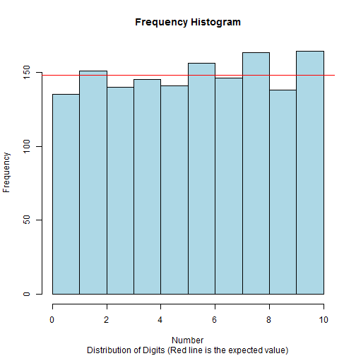
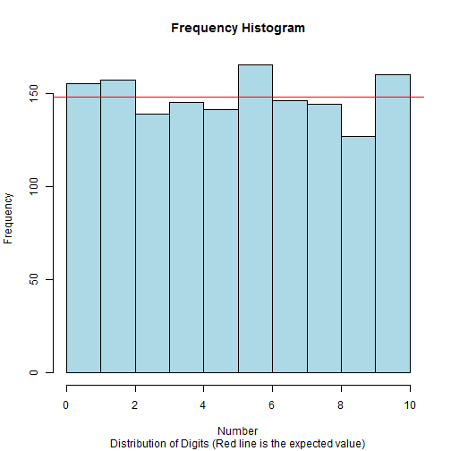

Random numbers have many uses.
- Making games unpredictable
- Unbiased sampling
- Simulation e.g. Monte Carlo
- Cryptography
Thomaz L Santana
\(X_0 = 4567\) (The seed I chose)
\(X_0^2 = 20\color{blue}{8574}89\) (The seed squared)
\(X_1 = 8574\) (The first pseudo-random number)
\(X_1^2 = 73\color{blue}{5134}76\)
\(X_2 = 5134\) (The second pseudo-random number)
\(X_2^2 = 26\color{blue}{3579}56\)
\(X_3 = 3579\) (The third pseudo-random number)
|
|
|

